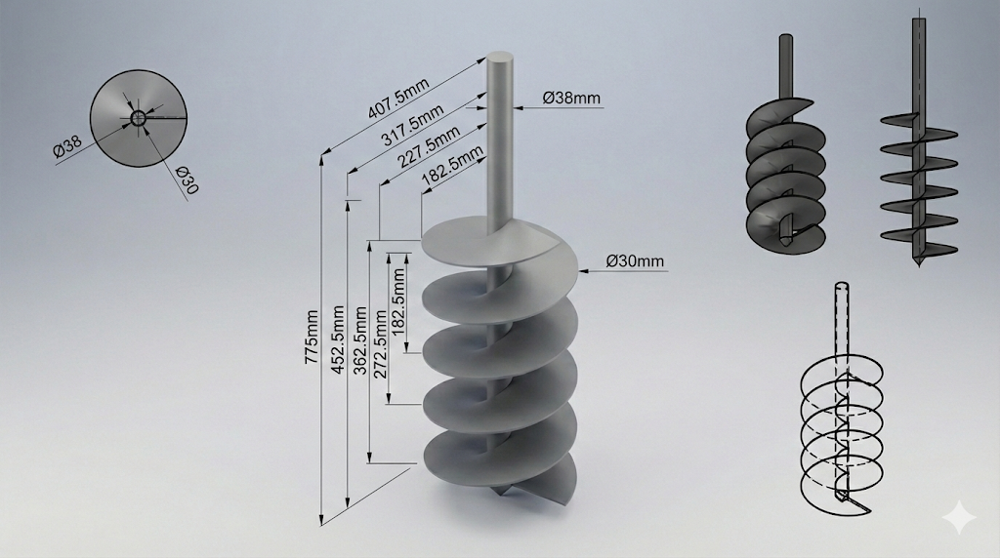

Parametric Earth Auger
Complex 3D Modeling and Technical Documentation of an Earth Auger Drill Bit. Designed with parametric equations for scalable manufacturing, ensuring adaptability across different soil types and machinery requirements.

psychology_alt The Challenge
Traditional auger designs often require complete remodeling when dimensions need to change for specific drilling tasks. This manual process is time-consuming and prone to errors, especially when calculating the complex geometry of the flighting (the spiral blade). The goal was to create a robust model that could be easily resized while maintaining structural integrity and manufacturing feasibility.
lightbulb The Solution
I utilized SolidWorks to build a fully parametric model. By linking key dimensions—such as shaft diameter, flight pitch, and outer diameter—to a global variable table, the entire assembly updates automatically.
- check_circle Equation-Driven Geometry: Flight path logic defined by mathematical relations to ensure smooth curvature.
- check_circle Sheet Metal Flattening: The flighting can be unrolled into a flat pattern for laser cutting, streamlining the fabrication process.
- check_circle Automated Documentation: 2D technical drawings update instantly when the 3D model specificiations are modified.
Project Details
Tools Used
Deliverables
3D Assembly, Flat Patterns (DXF), Fabrication Drawings
engineering Component Specification
Detailed fabrication drawings generated automatically from the parametric model. Below is a specification sheet for the helical flighting.